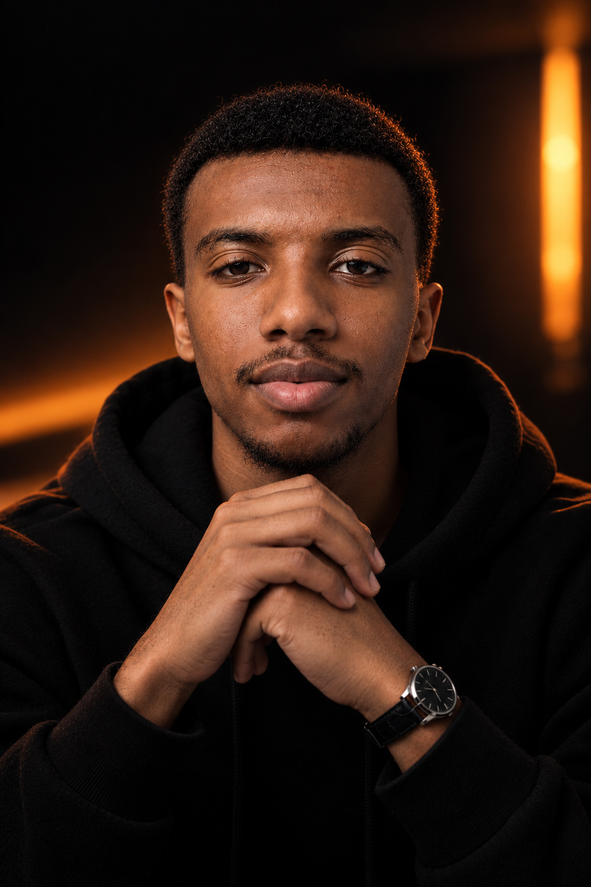

أنا 22 سنة، أصنع أفكاراً غريبة تخلي الناس يوقفون عندها، وأتأكد بالبيانات إنها تجيب نتيجة. مو بس شكل حلو، بل شكل يبيع.

اختر نشاطك وتحديك، وأعطيك فكرة غريبة مع طريقة نقيس فيها النجاح. كل فكرة تتولّد في ثانية، بس أصلها طريقة تفكيري.
جانبين: جانب يحلم، وجانب يحسب.
جزء من شغلي في تطوير السيستم والمخرجات: أي مهمة أحوّلها لمسار عمل واضح، ويتحسن مع كل دورة. اختر مسار واضغط على أي خطوة.
بلغة بسيطة: أرتّب الشغل في خطوات واضحة، فيطلع لك نفس الجودة كل مرة.
جرّب بنفسك، اضغط وبدّل.
بلغة بسيطة: أمثلة على كيف أفكر لما تنزل المبيعات.
أرقام تقريبية لتوضيح أثر الأسلوب.
نسب تقريبية لتوضيح أثر الأسلوب.
ما أبي سيرة ذاتية ولا عقد. اكتب مشكلتك في سطر واحد، وأرد عليك بفكرة أولى.